3 HARJOITUS 1.2: GEOSERVERIN WEB-KÄYTTÖLIITTYMÄ
Harjoituksen sisältö
Harjoituksessa tutustutaan tarkemmin GeoServerin päätoimintoihin käyttöliittymän kautta. Käydään läpi käyttöliittymän eri osioiden valintoja ja tärkeimpiä ominaisuuksia.
Harjoituksen tavoite
Harjoituksen jälkeen opiskelija ymmärtää GeoServerin toimintaa ja eri osioiden hallintatyökaluja.
Arvioitu kesto
35 minuuttia.
3.1 Ylläpitäjän käyttöliittymä
Kirjaudu nyt palvelimeen käyttäen tunnuksena admin ja salasanana gispo.
Ylävalikosta löytyviä GeoServerin toimintoja on ryhmitelty niiden käyttötarkoituksen mukaan ryhmiin:
GeoServer |
Yleistä tietoa GeoServerin asennuksesta ja esikatseluosio |
Data |
Sisältää aineiston lataamisen, määrittämisen ja kuvaustekniikan toimintoja |
Services |
Valikossa voi määritellä eri paikkatietopalvelujen ominaisuuksia |
Server |
Yleisiä asetuksia liittyen palvelimeen |
Tile Cache |
Karttatiilipalvelujen asetukset |
Security |
Pääsynhallintaan liittyviä asetuksia |
Utilities |
Lisätyökaluja |
Näiden lisäksi GeoServerin laajennukset voivat lisätä valikkoja käyttöliittymään.
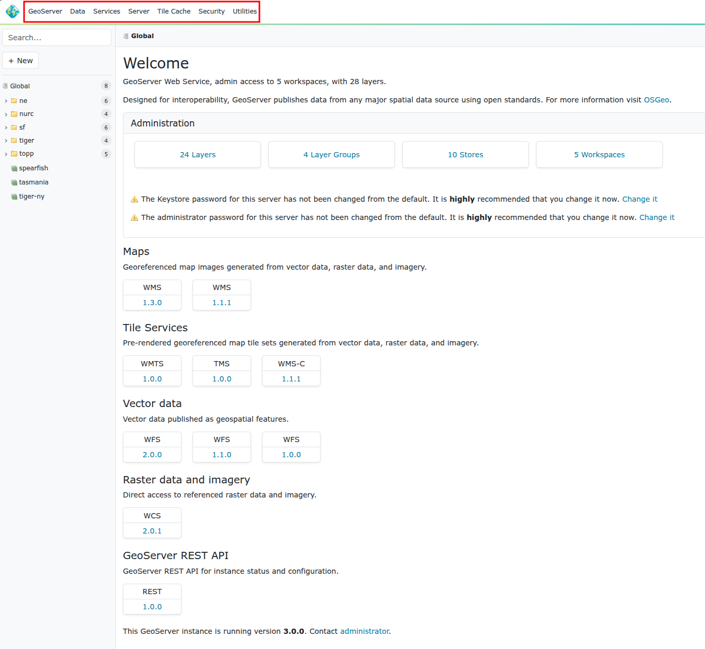
3.2 GeoServer-valikko
Avaa GeoServer-valikko ja tutki, mikä GeoServer-versio sinulla on käytössä ja mitkä muiden asennettujen ohjelmistojen versiot ovat. Tämäntyyppiset tiedot ovat tärkeitä palvelimen ongelmia selvitettäessä, tapahtuipa ongelmatilanteiden ratkaiseminen omatoimisesti taikka tukipalvelun avulla.
3.3 Data-valikko
Tämä valikko sisältää GeoServerin tärkeimtä toimintoja. Aineistot lisätään ja määritellään tämän valikon kautta.
3.3.1 Workspaces
Workspace on GeoServerin tapa säilyttää ja järjestää viittaukset aineistoihin (Stores). Aineistot itse on tallennettu hakemistoon (tai tietokantaan), johon GeoServerillä on käyttöoikeudet.
Tyypillisesti samassa workspacessa pidetään samanlaisia ja/tai samasta lähteestä saatuja aineistoja. Esimerkiksi organisaation aineistot voidaan järjestää teemojen mukaan workspacen avulla (ymparisto, kaavoitus, vaesto, terveys, jne.).
Avaa Workspaces-osio. Muutama workspace on valmiiksi luotu GeoServerille:
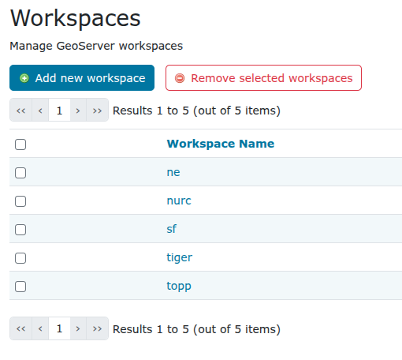
Paina Add new workspace.
Luo uusi workspace, jota käytetään jatkossa koulutuksessa, anna sille nimi helsinki ja kirjoita Namespace URI -kohtaan http://gispo.fi/geoserver/helsinki:
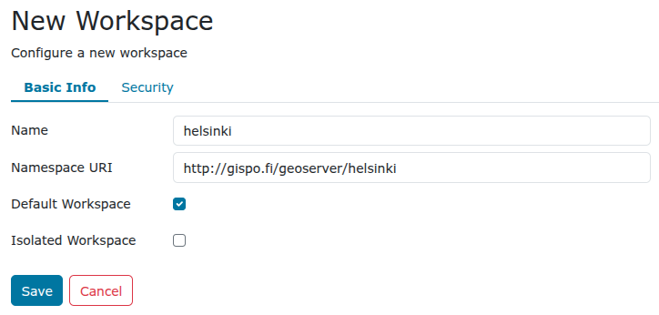
Rastita vielä Default Workspace, niin jatkossa juuri luomasi workspace on oletuksena lisättäessä aineistoja ja tasoja GeoServeriin.
Psst! URI (Uniform Resource Identifier) on teksti, joka määrittelee tietyn resurssin nimen. Se voi olla nettiosoite tai vaikka suhteellinen hakemisto kovalevystä. Ainoa vaatimus on se, että URI:n arvo on yksilöivä. Voit viitata esimerkiksi osoitteeseen tai kansioon, jossa on säilytetty workspaceen liittyvää dokumentaatiota.
Paina Save ja olet nyt lisännyt uuden workspacen GeoServerille.
Avaa äsken tekemäsi workspace painamalla helsinki-workspace Workspace Name -kohdan alta ja huomaa, että lisää valintoja on nyt saatavilla. Palataan niihin myöhemmin säädettäessä workspace-kohtaisia asetuksia.
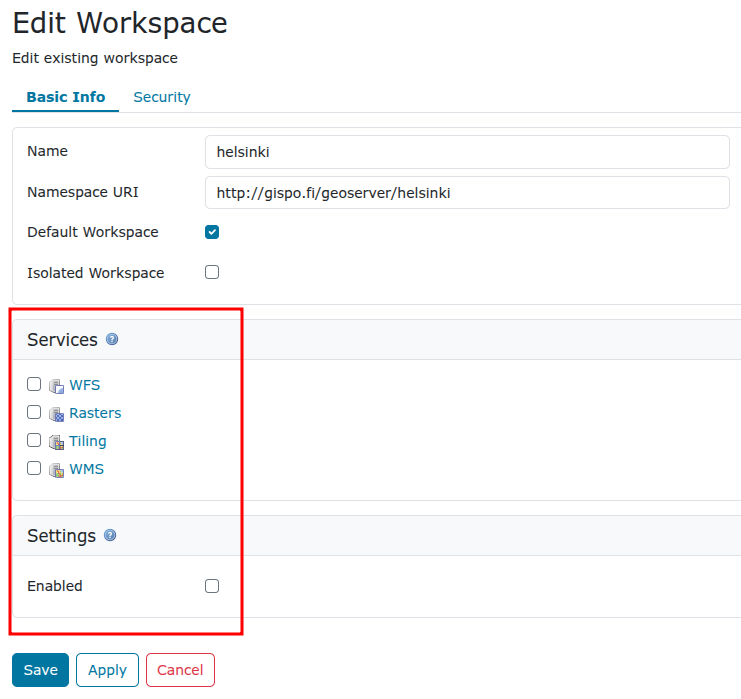
Palaa Workspace-näkymään painamalla Cancel.
Workspaceja voidaan poistaa valitsemalla yksi tai useampi workspace ja painamalla Remove selected workspaces -toimintoa.
3.3.2 Stores
GeoServerillä viitataan aineistolähteisiin Storesien avulla. Aineistolähteinä voivat olla yksittäiset tiedostot, tiedostoryhmät, hakemistot, tietokannat tai rajapintapalvelut.
Oletusasennuksessa on valmiina Store-viittauksia esimerkkiaineistoihin:
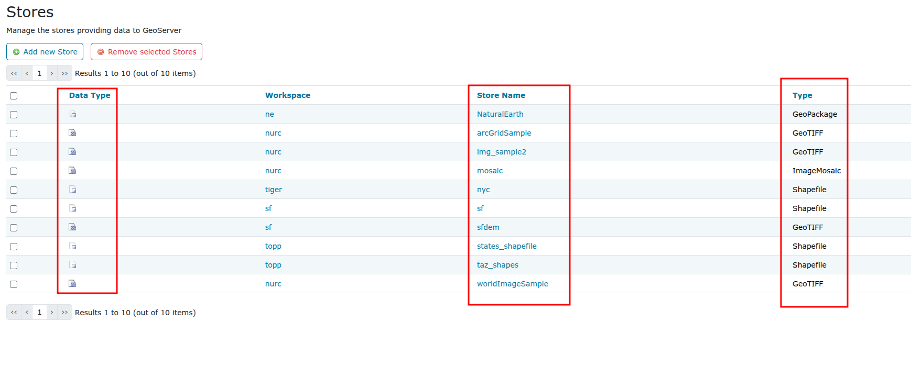
Jokaisen Storen vieressä on kuvake joka viittaa aineiston tyyppiin:
| Ikoni | Aineistotyyppi |
|---|---|
 |
Rasteriaineisto tiedostossa |
 |
Vektoriaineisto tiedostossa |
 |
Vektoriaineisto tietokannassa |
 |
Vektori palvelimelta (Web Feature Server) |
Tutustu muutamaan storen asetuksiin. Esimerkiksi sfdem viittaa rasteriaineistoon (huomaa kuvake) ja taz_shapes viittaa vektoriaineistoon.
Avaa sfdem-store ja taz_shapes-store. Kirjoita muistiinpanoihisi ylös vastaukset seuraaviin kysymyksiin:
Mihin aineistoon sfdem-store viittaa?
Mihin aineistoon taz_shapes-store viittaa?
Huomaa, että file:data/ viittaa GeoServerin Data Directory -hakemistoon. Hakemiston sijainti levyjärjestelmässä löytyy Server → Server Status -valikon kautta.
Store taz_shapes viittaa hakemistoon, jossa on useampia vektoriaineistoja, tässä tapauksessa .shp-tiedostoja.
Avaa vielä taz_shapes-store ja huomaa, että asetuksissa on rastittu Enabled. Se määrittää onko aineisto käytettävissä palvelimelta tai ei. Painamalla Browse näet kansiosisällön.
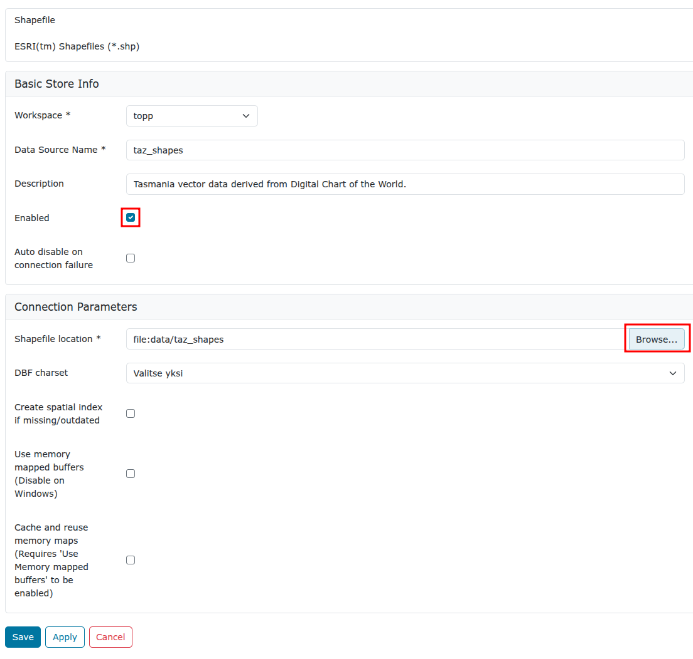
Toisin sanoen haluttaessa estää jonkin aineiston käyttöä GeoServerin kautta, ei tarvitse muuta kun jättää rastittamatta Enabled-valinta joko layer-, store- tai jopa workspace-valikossa.
Nyt kun olet avannut taz_shapes-storen niin GeoServer näyttää sinulle siihen liittyvän workspacen tiedo (huomaat sen sillä että valikoissa on kansio-kuvakkeet). Jotta pääset takaisin globaalinäkymäät voit painaa GeoServer-logoa ylävasemmalla.
3.3.3 Layers
Tasot (Layers) määrittelevät yhden aineistolähteen (Store) julkaisemisen ominaisuudet, kuten kuvaustekniikan, koordinaattijärjestelmän, metatiedot, palvelun ominaisuudet, karttatiilipalvelun (tile caching) määrittelyt jne.
Yksi taso vastaa yhtä aineistoa. Aineisto voidaan julkaista useisiin eri tasoihin, esimerkiksi eri kuvaustekniikoilla.
Layers-näkymässä on mahdollista muokata, lisätä tai poistaa tasoja. Layers-näkymän taulukossa on nähtävissä muutama taso ja niiden nimet (Name). Taulukossa lukee myös tason otsikko (Title) ja missä Storessa aineistot sijaitsevat.
Sarake Enabled näyttää tiedon siitä, onko taso käytettävissä palvelimelta vai ei. Huomaa, että käytettävyyden voi määritellä koko storelle (eli aineistolähteelle) tai erikseen tasoille (aineiston näkymille). Myös tason alkuperäinen koordinaattijärjestelmä on ilmoitettu taulukossa, Native SRS.
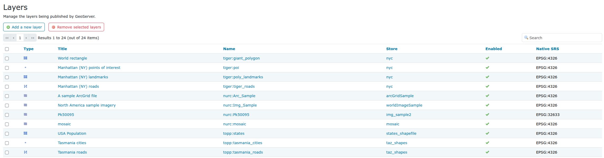
Avaa Manhattan (NY) landmarks -tason asetusten näkymä painamalla tason otsikkoa (Title) tai nimeä (Name) sarakkeesta.
Tasoon liittyvät asetukset ovat laajat ja siksi ne on jaettu välilehtiin Data, Publishing, Dimensions, Tile Caching ja Security.
Tutustu nyt eri välilehtien asetuksiin saadaksesi kuvan siitä, miten tasot määritellään GeoServerillä. Keskustele niistä kouluttajan kanssa.
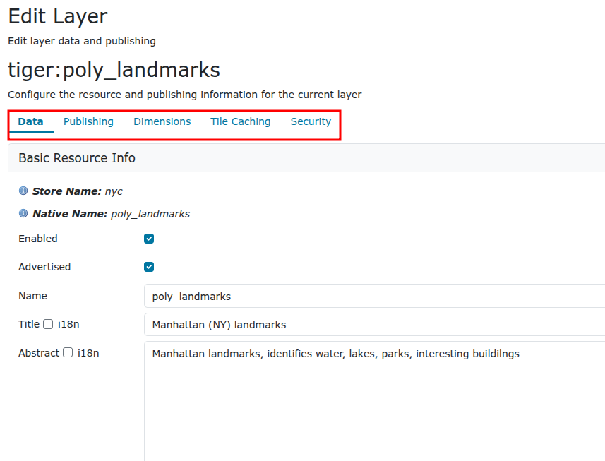
Tutustumme tarkemmin tasoasetuksiin myöhemmin, kun lisäämme omia aineistoja GeoServerille.
3.4 Layer Groups
Layer Groups -toiminnolla muodostetaan tasoryhmiä. Tasoryhmien avulla on muodostetaan useammasta karttatasosta yhdistettyjä karttatasoja. Tasoryhmiin voidaan lisätä sekä karttatasoja että tasoryhmiä. Muun muassa tasojen järjestystä ja kuvaustekniikoita voidaan määrittää tasoryhmän asetuksissa.
3.5 Styles
Styles-kohdassa määritellään tasoille (Layers) kuvaustekniikka, visualisointi.
Styles-määrittelyjä (kuvaustekniikka) käytetään aina kun tasoja julkaistaan WMS-palveluna. Kuvaustekniikka ei ole riippuvainen tasoista: samaa kuvaustekniikkaa voidaan käyttää useilla tasoilla, ja niillä voi olla useita valinnaisia kuvaustekniikoita.
Avaa Styles-valikko, saat näkyviin listan GeoServerilla olevista kuvaustekniikoista.
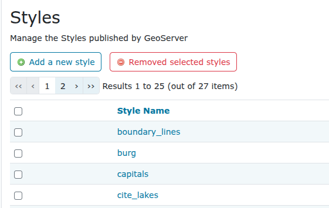
Avaa giant_polygon-tyyli ja tutustu GeoServerin käyttämään kuvaustekniikkaformaattiin. Tasojen kuvaustekniikka määritellään käyttäen Styled Layer Descriptor (SLD) -kieltä.
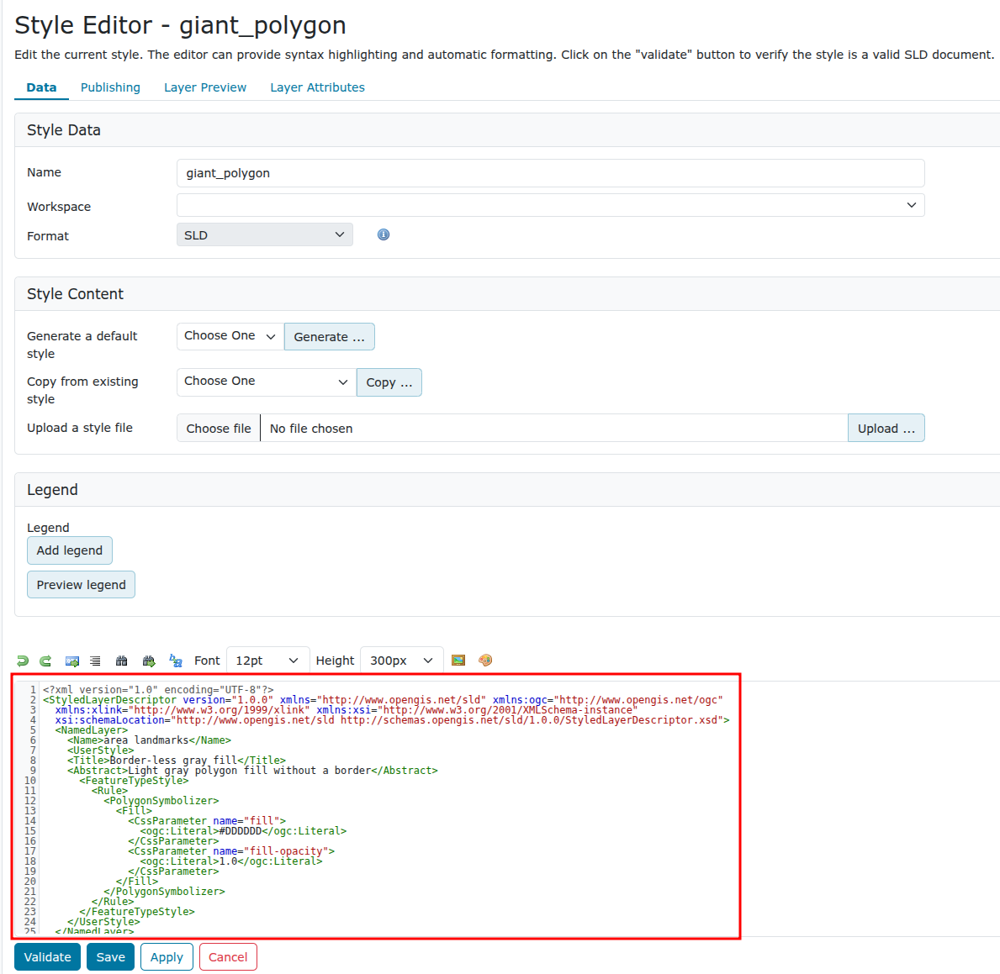
Kuvaustekniikka on hyvin laaja aihe ja siihen tutustutaan erikseen myöhemmin. Kuvaustekniikan toteuttamista voi helpottaa käyttämällä CSS-laajennusta, tätäkin käsitellään myöhemmin koulutuksessa.
3.6 Services
GeoServerin rajapintapalvelujen (WFS, WMS ja WCS) yleisasetukset määritellään Services-valikon kautta ja näihin tutustutaan tarkemmin myöhemmin.
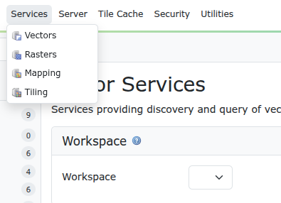
3.7 Server
Tässä osiossa voi määritellä palvelimen yleisiä asetuksia.
3.7.1 Contact Information
Päivitetään GeoServerin yhteystiedot. Valitse Server → Contact Information.
Täytä omilla tiedoilla ainakin kuvassa merkityt kentät. Nämä tiedot ovat tärkeitä metatietoja GeoServerin ulkopuolisille käyttäjille.
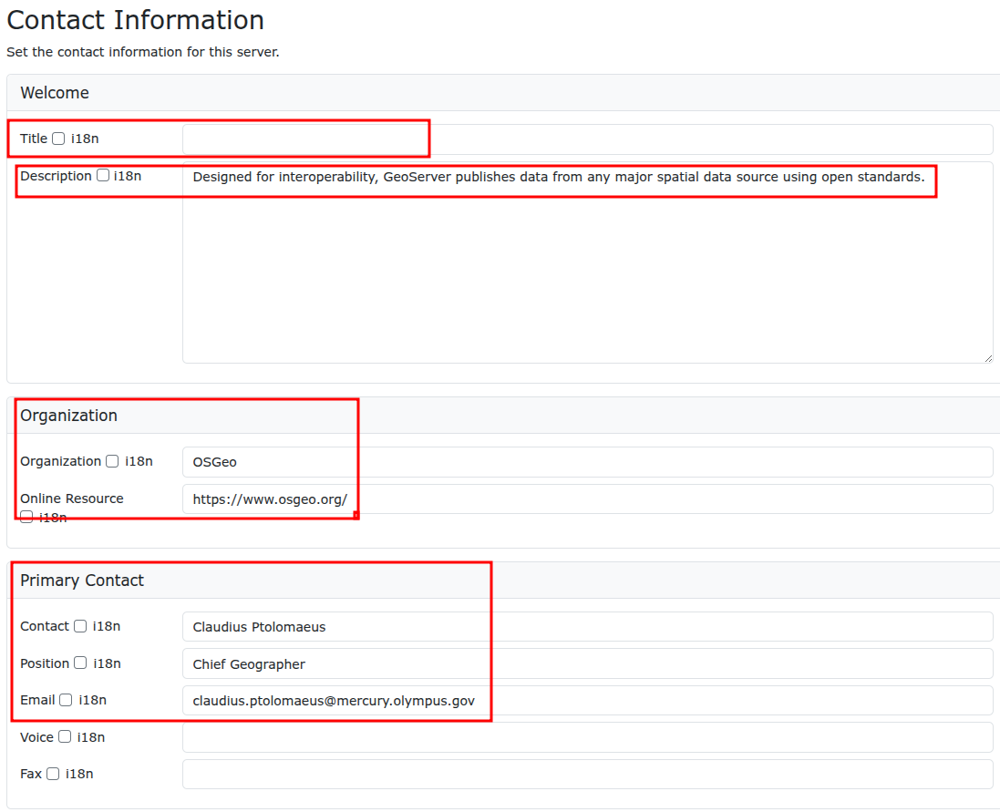
3.7.2 Server Status
Server Status -sivulla on tietoa erilaisista GeoServerin asetuksista ja tilasta. Huomaa esimerkiksi Data directory -kansion sijainti.
Kirjoita omiin muistiinpanoihisi palvelimesi Data directory:n sijainti, joka ei välttämättä ole sama kuin kuvassa.
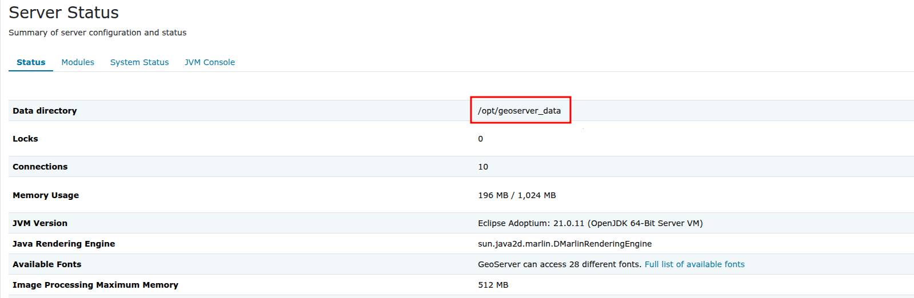
3.7.3 Logs
Logs -valinnan kautta voit katsoa palvelimen lokitietoja.
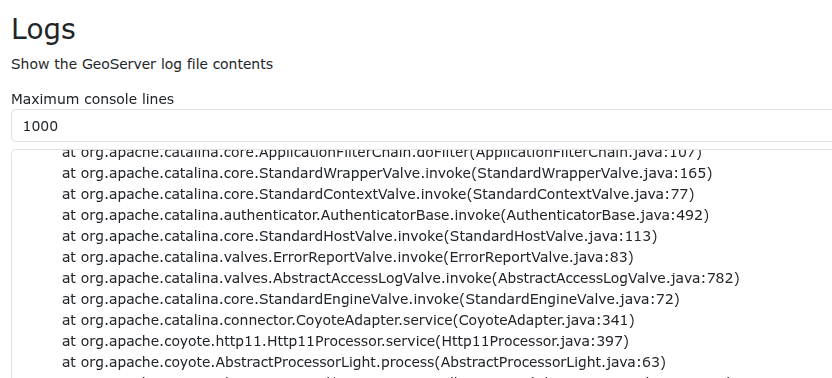
3.7.4 Global Settings
Tämä osio sisältää muun muassa rajapintapalvelujen asetuksia ja lokitietojen asetuksia.
3.7.5 Image Processing
Tämä osio sisältää Kuvien (WMS-ja WCS-palvelujen) käsittelyyn liittyviä asetuksia.
3.7.6 Raster Access
Tämä osio sisältää rasteriaineiston käsittelyyn liittyviä muisti- ja CPU-asetuksia.
3.8 Tile Cache
Tämän valikon kautta määritellään karttatiilipalvelujen (tile caching) asetuksia. Karttatiilipalveluihin ja tämän valikon osioihin tutustutaan tarkemmin myöhemmin.
3.9 Security
Valikko sisältää GeoServerin pääsynhallintaan liittyvät asetukset. Huomaa, että muun muassa pääsynhallinta voidaan määrittää sekä käyttäjä-, ryhmä- ja roolikohtaisesti että aineisto- ja palvelukohtaisesti. Vilkaise nyt Users, Groups, Roles -valikkoa.
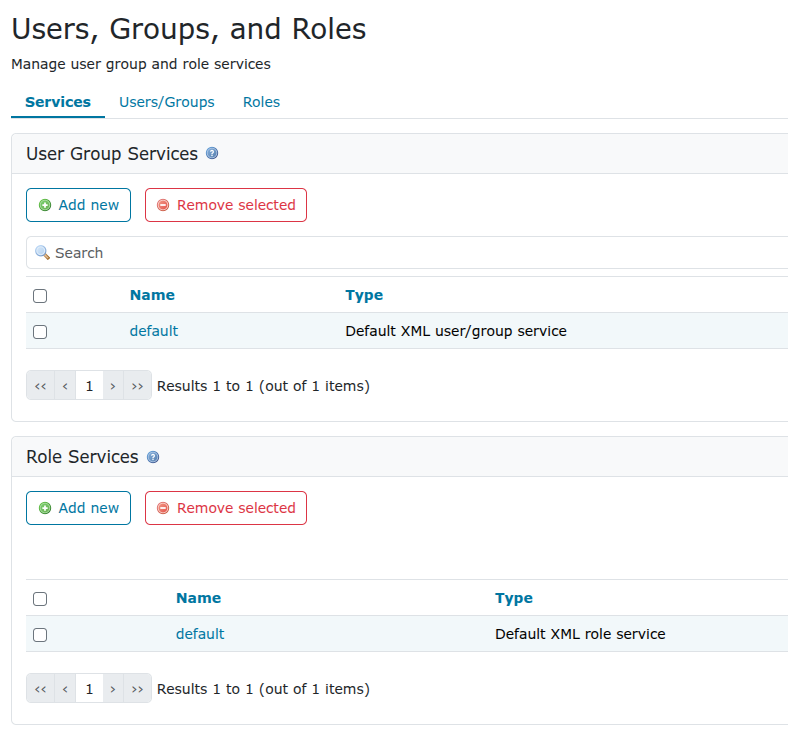
Myös pääsynhallintaa käsitellään tarkemmin myöhemmin.